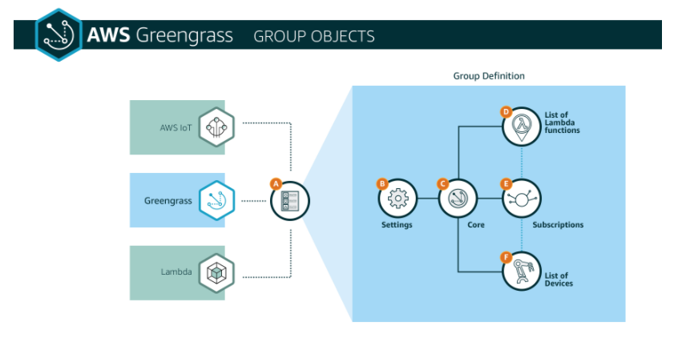

소개
AWS IoT Greengrass ML Workshop
이 워크샵을 통해 AWS Greengrass ML 추론 및 Amazon SageMaker의 개념을 배우고 Amazon SageMaker로 기계 학습 모델을 구축하고, 모델을 Greengrass Core에 배포하고, Lambda 함수를 사용하여 Greengrass Core에서 ML 추론을 실행하는 방법을 실습에서 배울 수 있습니다. 이 Workshop은 AWS Cloud9 환경 및 Amazon SageMaker 노트북 인스턴스를 사용하여 수행되도록 설계되었습니다. AWS Greengrass가 Cloud9 인스턴스에서 구성 및 실행됩니다. Workshop 환경은 AWS CloudFormation으로 자동 생성됩니다. Amazon Linux는 Cloud9 및 SageMaker의 운영 체제로 사용되며 표준 사용자는 ec2-user입니다. AWS Cloud9에는 클라우드에서 소프트웨어를 코딩, 빌드, 실행, 테스트, 디버깅 및 릴리스하는 데 사용하는 도구 모음이 포함되어 있습니다. 이러한 도구를 사용하려면 AWS Cloud9 통합 개발 환경 또는 IDE를 사용하십시오. 또한 이 워크샵의 실습에 필요한 브라우저에서 셸 액세스를 제공합니다. CIFAR-10 데이터 세트를 기반으로 한 이미지 분류 모델은 Amazon SageMaker와 함께 훈련 된 후 AWS Greengrass에서 사용되어 에지에서 이미지 분류를 수행합니다. 실제 환경에서는 카메라가 연결된 장치를 사용하는 것이 좋습니다. Greengrass 소프트웨어를 실행하는 EC2 인스턴스에 카메라가 연결되어 있지 않기 때문에 정기적으로 스캔되는 디렉토리에 이미지를 복사하기 만하면 이미지가 발견되면 분류됩니다.
준비사항
- AWS 계정: 자원을 생성할 수 있는 권한이 필요합니다.
- 브라우저: 최신 버전의 크롬, 파이어폭스를 사용하세요.
관리자 권한이 있는 AWS 계정 노트북 브라우저
Workshop Content
이 세션은 엣지(edge)에서 머신 러닝 솔루션을 만드는 것에 관한 것입니다.
AWS Greengrass는 연결된 디바이스에서 엣지(edge)에서 안전한 방식으로 로컬 컴퓨팅, 메시징, 데이터 캐싱, 동기화 및 ML 추론 기능을 실행할 수있는 소프트웨어입니다.
Amazon SageMaker는 개발자와 데이터 과학자가 모든 규모의 기계 학습 모델을 쉽고 빠르게 구축, 교육 및 배포 할 수 있도록하는 완전히 관리되는 플랫폼입니다.
이 workshop을 통하여,
- Amazon SageMaker로 이미지를 분류하기 위해 머신 러닝 모델 교육
- Greengrass 그룹 프로비저닝
- Amazon SageMaker로 훈련 된 모델을 AWS IoT Greengrass에 다운로드
- AWS IoT Greengrass에서 사용할 AWS Lambda 함수 생성
- Lambda 함수를 사용하여 Greengrass에서 이미지 분류를 수행하십시오. Lambda 함수는 Greengrass에 배포 된 모델을 로드합니다.
Architecture

Introduction into Amazon SageMaker
Amazon SageMaker는 완전히 관리되는 머신 러닝 서비스입니다. 데이터 과학자와 개발자는 Amazon SageMaker를 사용하여 기계 학습 모델을 쉽고 빠르게 구축 및 교육 한 후 프로덕션 환경에서 호스팅되는 환경에 직접 배포 할 수 있습니다. 탐색 및 분석을 위해 데이터 소스에 쉽게 액세스 할 수 있도록 통합 Jupyter 저작 노트북 인스턴스를 제공하므로 서버를 관리 할 필요가 없습니다. 또한 분산 환경에서 매우 큰 데이터에 대해 효율적으로 실행되도록 최적화 된 공통 기계 학습 알고리즘을 제공합니다.
Introduction to AWS Greengrass
AWS Greengrass는 AWS 클라우드 기능을 로컬 디바이스로 확장하여 해당 디바이스가 정보 소스에 더 가까운 데이터를 수집 및 분석하는 동시에 로컬 네트워크에서 서로 안전하게 통신 할 수있는 소프트웨어입니다. 보다 구체적으로, AWS Greengrass를 사용하는 개발자는 클라우드에서 서버리스 코드 (AWS Lambda 함수)를 작성하여 애플리케이션의 로컬 실행을 위해 디바이스에 편리하게 배포 할 수 있습니다.

Greengrass Group
AWS Greengrass 그룹 정의는 AWS Greengrass 핵심 장치 및 이와 통신하는 장치에 대한 설정 모음입니다. 다음 다이어그램은 AWS Greengrass 그룹을 구성하는 객체를 보여줍니다.

Contact Us
AWS 서비스에 관한 질문은 AWS Support나 담당 AM을 통해서 문의해 주시고 본 워크샵의 발표자료에 관한 질문 사항은 아래의 email 링크를 통해 문의해 주시면 감사하겠습니다.